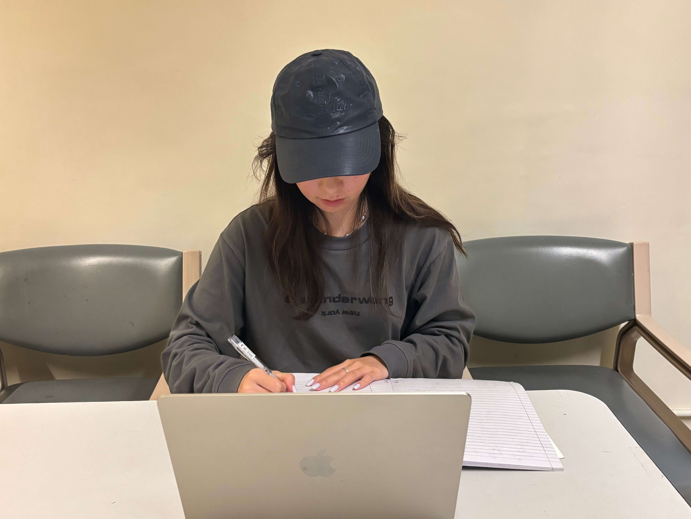

01
趋势概览：内地生赴港人数五年攀升
据香港八大院校公开数据，近五年香港八大内地本科生人数持续增长，越来越多的内地学生选择赴港就读本科。
八大院校内地本科生入学趋势
2020/21 – 2024/25 学年
02
政策解读：招生上限持续放宽
香港优化内地本科招生政策，是内地赴港就读本科人数上升的重要推动因素。
2023 年香港特区发布施政报告，自 2024/25 学年起，政府资助专上院校的非本地生招生上限上调至本地学额的 40%。2025 年施政报告进一步提出，由 2026/27 学年起，将非本地自费学生的招生上限提升至本地学额的 50%。
本地与非本地学生构成变化
政策调整下的生源结构演变
03
个案访谈：扩招政策的受益者
政策的持续调整，推动香港高校扩大内地招生规模，同时促使院校增设全新专业，为分数条件有限的内地学生，提供了更多赴港就读本科的机会。
按照工商管理专业往年的录取要求，我的高考成绩还差30至50分。今年港校扩招政策正式落地，我留意到浸会开设了全新专业，录取门槛相对更低，我也因此压线被录取。浸会大学一直是我的理想院校，以我的分数水平，仅能报考该校这一新设专业。我能够成功入读，大部分原因都要归功于扩招政策。

—— 丁悦然，香港浸会大学工商管理全球娱乐专业内地本科生
04
调研分析：赴港就读的驱动因素
多重现实因素，也推动内地学生选择香港高校。
本次面向内地赴港本科生的专项问卷调查，共回收有效样本 107 份，下图呈现了影响学生选择赴港就读本科的各项因素的影响程度分布情况。
05
深度分析：四大核心驱动力
基于本次调研的数据，可对内地学生选择赴港就读的因素展开分析。
1. 较低门槛与成本优势
香港就读本科性价比更高、环境安全，是内地学生的优选。据香港八大院校 2026/27 学年官方公示，港校非本地本科生年度学费区间为 17.5 万至 24.9 万港币，对比英美顶尖院校，整体学费更低。与此同时，依托 "一国两制" 优势，港校学历全球认可，能够有效降低海外政策变动带来的不确定风险。
2. 就业发展空间广阔
港校具备国际化培养模式，依托香港本地及粤港澳大湾区的校招资源，可为学生提供丰富的实习与就业渠道。凭借较高的社会认可度，港校本科文凭的就业竞争力突出，成为内地学生择校的原因之一。
3. 永居身份的政策红利
港校本科毕业生可申请 IANG 非本地毕业生留港签证，在港居住满七年还可申领香港永久身份。相关的配套政策，受到众多学生及家长的关注与重视。
4. 综合学术实力突出
香港高校整体排名稳居国际前列，教育质量广受认可。在 2026 年泰晤士高等教育亚洲大学排名中，香港八所资助院校全部进入亚洲百强。其中，香港大学、香港中文大学位列亚洲前十；香港教育大学、岭南大学首次上榜，分别排名第 37 位、第 84 位；香港浸会大学升至第 40 位。香港高校整体实力稳步提升，持续吸引内地生源。
06
毕业去向：多元化的发展路径
在多重现实因素的影响下，内地在港本科生的毕业发展选择更趋多元。以香港大学 2024 届非本地毕业生的去向数据为例，可呈现相关毕业发展路径的分布情况。部分学生计划毕业后留港就业发展，部分学生倾向返回内地寻求工作或深造机会，还有一部分学生则以港校本科学历为依托，申请海外院校继续深造。
港大2024届非本地毕业生去向分布
就业与深造流向桑基图
内地赴港就读本科人数上升，是现实条件与发展机遇共同作用的结果。对于选择港校的内地学生而言，这既是升学途径，也为个人未来发展提供了更多选择。